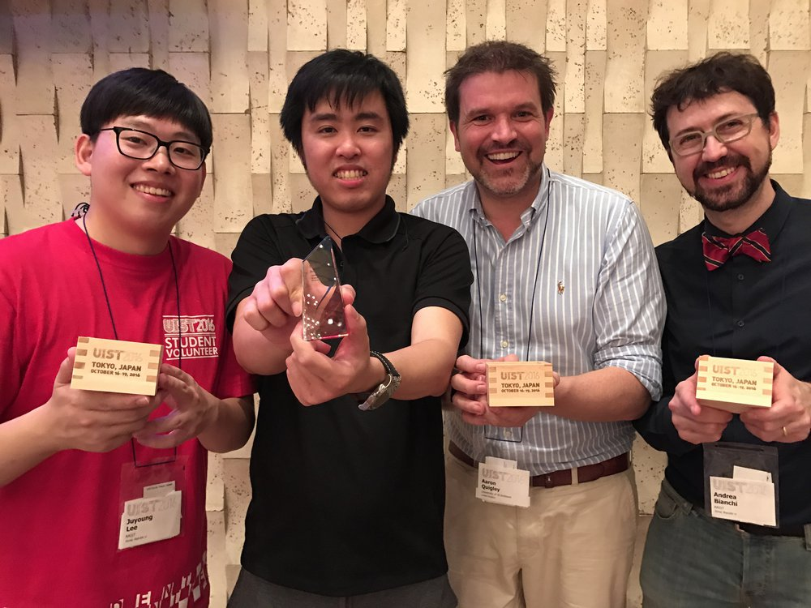
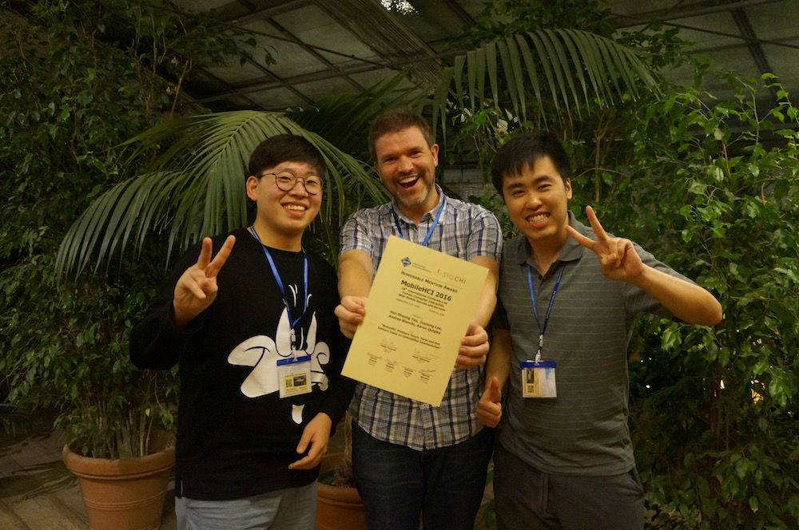

Exploring the future of Natural Human-Robot Interaction
Research Scientist at Digit Robotics. Previously at Huawei; researcher at KAIST. PhD at the University of St Andrews. I love tinkering with technology.
- Best Paper Award, CHI 2018
- Honorable Mention Award MobileHCI 2016
- Honorable Mention Award MobileHCI 2017
- Best Demo Award UIST 2016
- Low-cost sensing + ML for novel interactions
- Single-Handed & Cross-Device Interaction
- Radar Sensing & Gesture Recognition
- Wearable & Ubiquitous Computing
About Me
I am a Research Scientist at Digit Robotics, where I explore the future of Natural Human-Robot Interaction.
I received my PhD from the University of St Andrews under the supervision of Prof. Aaron Quigley. Previously, I worked as a Principal Research Scientist at Huawei through the TopMinds program and also conducted research at KAIST. I also held internships at Microsoft Research Cambridge, Google, and Tokyo Tech.
My research focuses on developing novel input devices and interaction techniques for next-generation computing systems. I work at the intersection of Human-Computer Interaction, Ubiquitous Computing, and Wearable Technologies, using machine learning and signal processing to unlock new capabilities from low-cost sensors. My work has appeared at premier venues including ACM CHI, UIST, UbiComp/IMWUT, MobileHCI, IEEE VR, TVCG, ISMAR, SIGGRAPH, and JNCA.
Awards Gallery
Highlights from UIST and MobileHCI recognitions


Selected Publications
Full publication list on Google Scholar